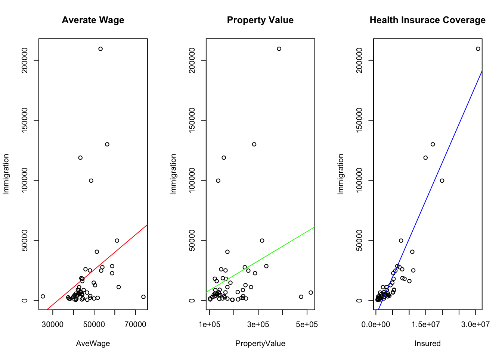
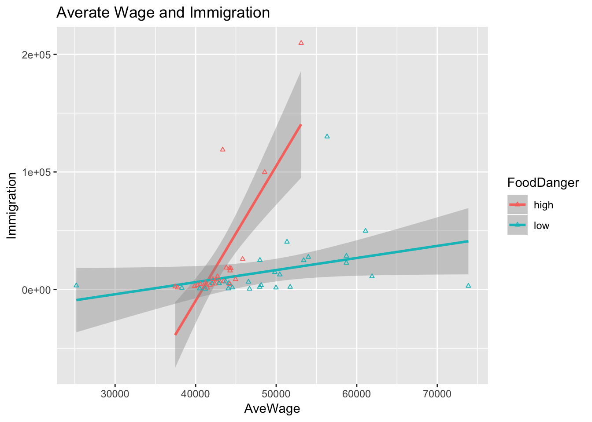
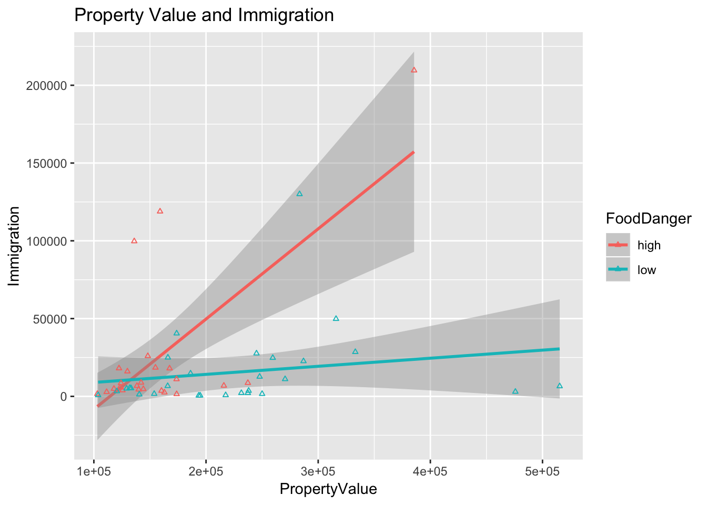
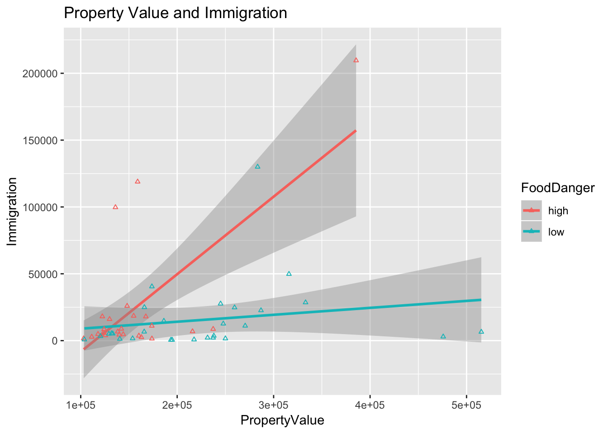

Results
Results
First, I run a multiple regression containing all the variables and linear regressions in terms of each variable.
summary(lm(Immigration ~ AveWage + PropertyValue + Insured + factor(FoodDanger)))##
## Call:
## lm(formula = Immigration ~ AveWage + PropertyValue + Insured +
## factor(FoodDanger))
##
## Residuals:
## Min 1Q Median 3Q Max
## -32342 -7067 1306 6742 39689
##
## Coefficients:
## Estimate Std. Error t value Pr(>|t|)
## (Intercept) -1.073e+04 1.258e+04 -0.853 0.39805
## AveWage -4.634e-01 3.576e-01 -1.296 0.20128
## PropertyValue 9.101e-02 2.980e-02 3.054 0.00371 **
## Insured 6.398e-03 3.506e-04 18.249 < 2e-16 ***
## factor(FoodDanger)low 3.211e+03 4.193e+03 0.766 0.44765
## ---
## Signif. codes: 0 '***' 0.001 '**' 0.01 '*' 0.05 '.' 0.1 ' ' 1
##
## Residual standard error: 12670 on 47 degrees of freedom
## Multiple R-squared: 0.8986, Adjusted R-squared: 0.8899
## F-statistic: 104.1 on 4 and 47 DF, p-value: < 2.2e-16par(mfrow=c(1,3))
plot(AveWage,Immigration, main = "Averate Wage")
abline(lm(Immigration ~ AveWage), col = "red")
plot(PropertyValue,Immigration, main = "Property Value")
abline(lm(Immigration ~ PropertyValue), col = "green")
plot(Insured,Immigration, main = "Health Insurace Coverage")
abline(lm(Immigration ~ Insured), col = "blue")
From the results shown, we have key findings that:
it is plausible to say health insurance is more influential than the other factors as it has a significant correlation with immigration. The slope is 0.0064, which states a weak relationship. \(\mu_a\) is true.
Average wage shows a negative relationship with immigration, which is not significant, while the property value has a weak, positive relationship with immigration. The slope is about 0.091. \(\mu_b\) is rejected.
Food risk may not be that important for immigrants when choosing the state. \(\mu_c\) is rejected.
Separately, the health insurance coverage manifests the most salient relationship with immigration. They are positively correlated.
Next, the other three variables are measured with “food danger” factor variable. Plots are as following:
 

The plots are not sufficient to provide evidence for a relationship between food danger and immigration. It is even observed that in high-risk areas, average wage and property value show a stronger positive relationship with immigration. A possible reason behind is, a bigger population could give rise to more food issues.